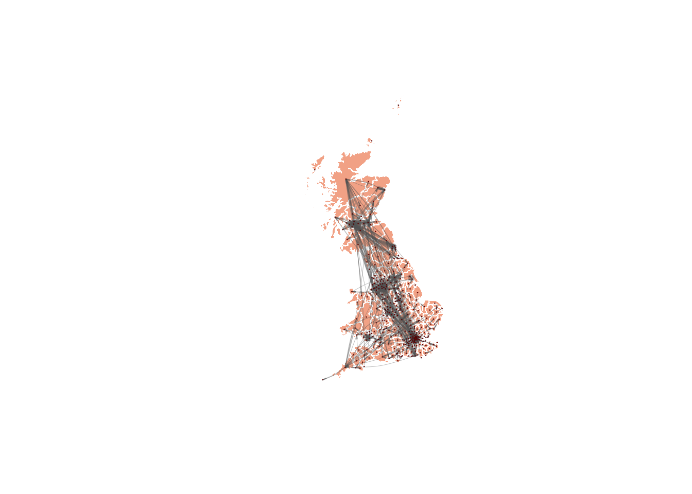

library(sf)
library(igraph)
library(dplyr)Do-It-Yourself
We start by loading all the libraries required for this section.
And the data. In this case, you are going to be working with Local Authority units in the UK. The LADs will be the nodes and their centroids will determine the position of the nodes in the network.
df_lads <- st_read("./data/UK-mobility/LAD_Dec_2021_GB_BFC_2022_1464193826337634923.gpkg") %>% st_transform("epsg:4326")Reading layer `LAD_DEC_2021_GB_BFC' from data source
`/Users/carmen/Library/CloudStorage/OneDrive-TheUniversityofLiverpool/GitHub/gds/data/UK-mobility/LAD_Dec_2021_GB_BFC_2022_1464193826337634923.gpkg'
using driver `GPKG'
Simple feature collection with 363 features and 8 fields
Geometry type: MULTIPOLYGON
Dimension: XY
Bounding box: xmin: 5512.998 ymin: 5336.966 xmax: 655653.8 ymax: 1220302
Projected CRS: OSGB36 / British National Griddf_nodes <- st_drop_geometry(df_lads) Before getting started with the analysis, we perform a few operations to make the subsequent work simpler. Firstly, we rename the variable for the name of the nodes and place it in the first columns of the df_nodes dataset:
names(df_nodes)[names(df_nodes) == "LAD21NM"] <- "name"df_nodes <- df_nodes %>% relocate("name")The edges of the network are going to be determined by flows of people between LADs. The data for flows is based on posts with location information, mined from Twitter. This dataset was created by Cabrera-Arnau and co-authors to track internal mobility during COVID-19 in the UK. If you are interested in how the data was obtained and processed, you can find the information here (wang2022?).
df_edges <- read.csv("./data/UK-mobility/Twitter-LAD.csv")In order to simplify the network, we are going to work only with edges representing flows that involve more than 2 people. We can easily redefine the dataframe of edges:
df_edges <- df_edges[df_edges$flow > 2, ] To make sure that the dataset of edges matches with the information in the dataset of nodes, we filter df_edges so that it only contains names of LADs that are in the df_nodes dataset:
unique_names <- unique(df_nodes$name)
df_edges <- df_edges[df_edges$origin_LAD %in% unique_names, ]
df_edges <- df_edges[df_edges$destination_LAD %in% unique_names, ] At this point, we are ready to create the mobility network:
# Create a graph 'g_lads' from data frames 'df_edges' and 'df_nodes'
# The graph is undirected (directed = TRUE)
g_lads <- graph_from_data_frame(d = df_edges,
vertices = df_nodes,
directed = TRUE)For visualisation purposes, you can obtain the centroids of the LAD geographies, which will mark the layout of the network nodes:
centroids <- st_centroid(df_lads)Warning: st_centroid assumes attributes are constant over geometries# Extract x and y coordinates
df_centroids <- data.frame(
x = st_coordinates(centroids)[, "X"],
y = st_coordinates(centroids)[, "Y"]
)
lo <- as.matrix(df_centroids)And now you can plot the network on top of the LAD polygons for geographical context:
plot(st_geometry(df_lads), border=adjustcolor("white"), lwd=0.5, col = adjustcolor("sienna2", alpha.f = 0.6))
plot(g_lads, layout=lo, rescale=FALSE, edge.curved=0.1, edge.width=0.08*(E(g_lads)$flow)^1.5, edge.arrow.size=.15, edge.arrow.width=.2, edge.color=adjustcolor("gray40", alpha.f = .45), vertex.color="darkred", vertex.frame.color="black", vertex.frame.width=0.1,
vertex.label= " ", vertex.label.color="black",
vertex.size=8, add=TRUE)
Task 1: network metrics
Compute the following network metrics:
Density
Histogram of in-degree
Histogram of out-degree
Histogram of closeness centrality
Histogram of betweenness centrality
Diameter
Reflect on your findings? Do you find anything unexpected? Do your findings agree with your prior knowledge of internal mobility in the UK?
Task 2: community detection
Find network communities by running the walktrap algorithm. Explore other well-known community-detection algorithms such as greedy optimisation, Louvain method, Leiden method, etc. Useful resources are, for example, (clauset2004?). If you are curious, you are very welcome to explore these techniques to try to understand what goes on behind the scenes.